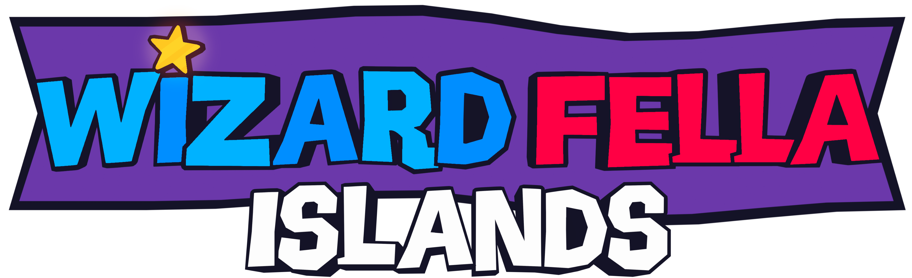
It's that time once again for a monthly newsletter!
A bunch of interesting stuff this month but if you've played the Demo you would've seen (almost) everything that I will showcase here.
I relased the demo for Wizard Fella Islands on the 25th
Check it out on itch.io!
Maple Isle is the second island in the game. A home for Flute and a few other Fellas who you will get to know.
This month I made two important locations for this island.
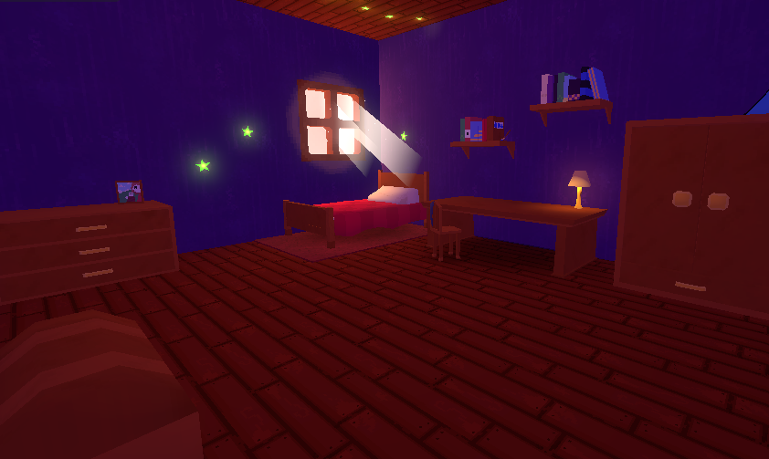
Screenshot of Flutes Room
The first one is Flute's Room. It's where you will start the first part of this island.
I still want to add more to it and also have to make the rest of Flute's house.
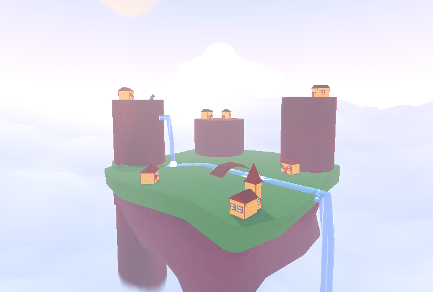
Screenshot of Maple Isle
I've made a mesh for the Maple Isle and some of it's assets. I've also been trying to figure out the gameplay for the parts.
Just like the room, it might get changed later but is in a pretty good place now.
The main menu was updated with a few more assets as promised in the last newsletter.
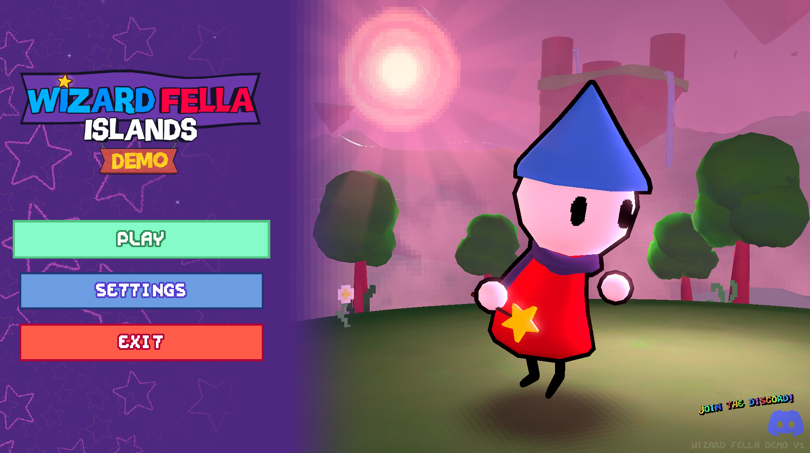
The main screen of the main menu
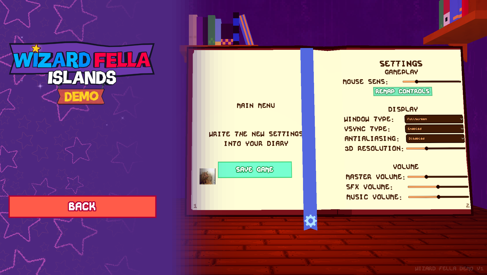
The settings screen of the main menu
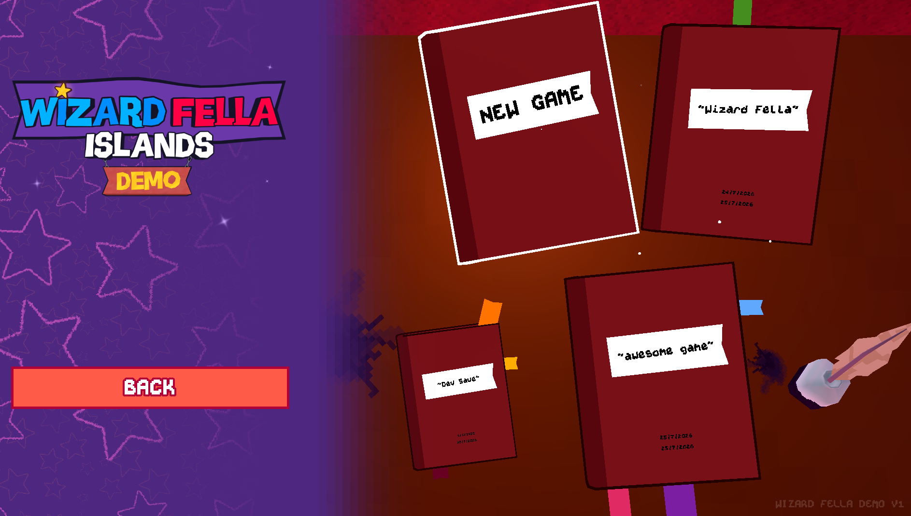
The save select screen of the main menu
There is also now a level select that lets you load into levels that you have visited.
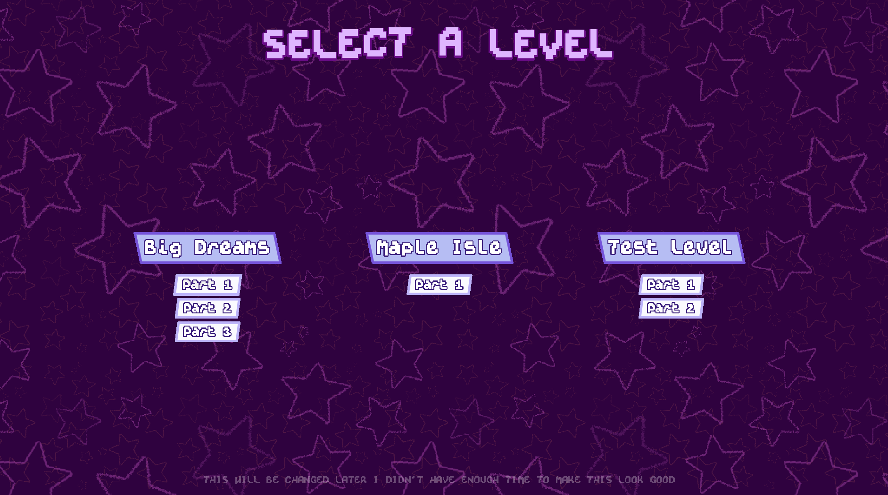
The level select screen
Logically it works but it will look WAY WAY WAY different once I get to polishing it.
There is now support for very simple customization of your character!
Color of clothes, hat and scarf can be changed aswell as hiding the scarf and hat.
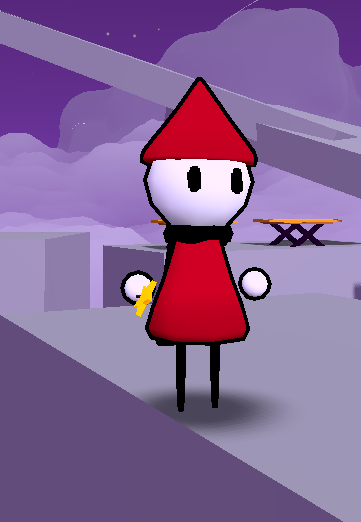
Customization example 1
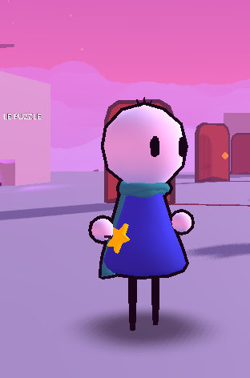
Customization example 2
There isn't a way to change the appearance in game yet but I used this for some scenes in the demo :D
In the future this will be expanded with the ability to wear different hats and scarfs and etc...
Hmm...
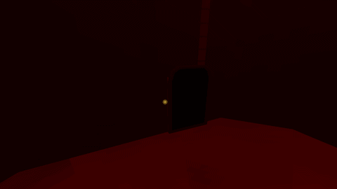
...
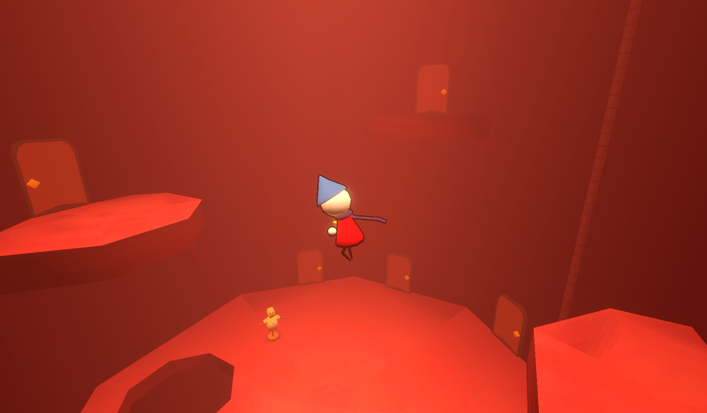
...
You'll just have to find this yourself :D
Level Data
So up until now the data for levels was just thrown around a few places. And if I wanted to, for example, change the name of a level it'd be quite a long ordeal.
I have now moved level data like level name, descriptions and parts to it's own resource. This means if I just change the values in this file it will change it everywhere.
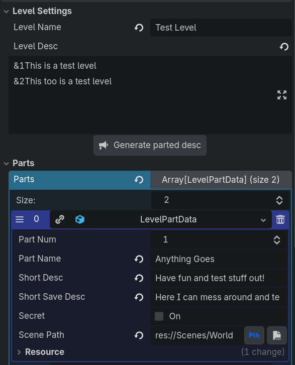
Example of Level Data
This doesn't affect the game in any way but makes working on it easier
Opening Logos
I've added a quick opening logo scene when you boot up the game.
It shows the Godot Engine's logo as well as mine and can be skipped if you press Enter.
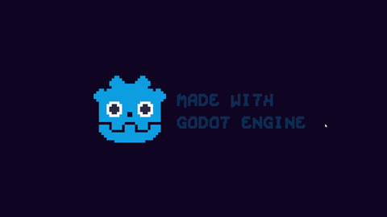
Opening Logos GIF
Demo Cover
Check out this awesome cover art for the demo that was made by BreadFiend
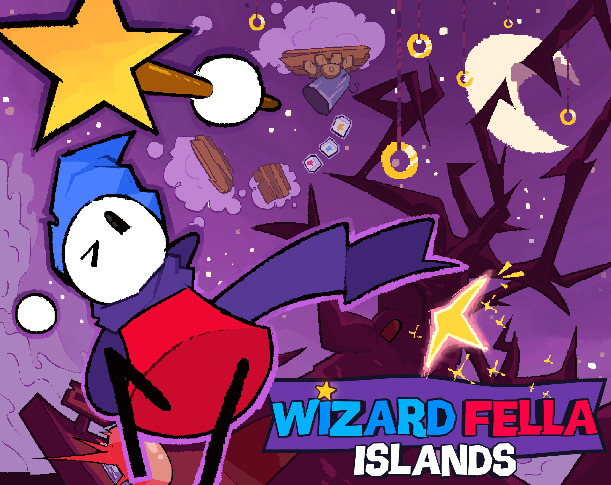
Demo cover made by BreadFiend
I'm really really happy with how it turned out. Check out more of Bread's work
That's it for this month's newsletter. It's been really exciting to finally get the demo out and all the feedback on it has really motivated me to keep going!
I might be a bit busy next month but I'll still try to work on the game. The main focus for now is Maple Isle.
I'll see you next time, bye for now!!!